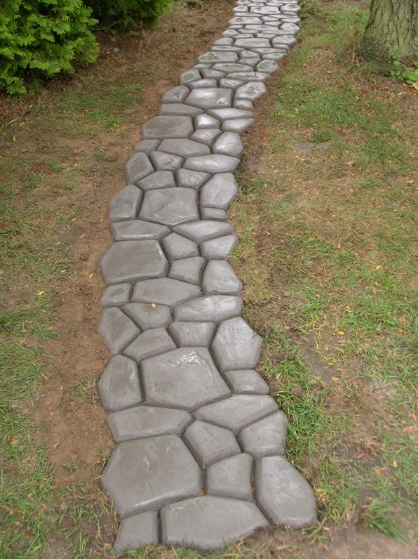
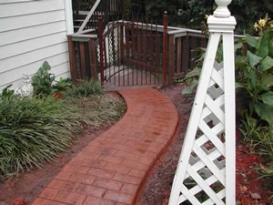
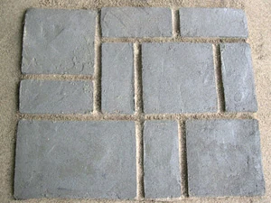

Home/Garden walkways
Garden walkways
A 24-inch-wide garden path can cross a rolling lawn or wind between beds. Choose a colour that matches the border or one that stands apart.
Continuous garden paths
A custom extruded path follows the route set out on site. Integral colour runs through the concrete and the surface can be patterned to coordinate with nearby curbing.
Cobblestone & random brick
Each unit is made on site and laid to follow the ground. These individual pieces suit a winding path through a garden or a route from the patio to a favourite seat.
You can request a walkway on its own or include it with a new border.

Walkway finishes


Have a border in mind?
We’ll walk the property with you and measure it for a free written quote.